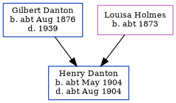

Henry Thomas Danton cMay 1904 - c1904 [ Home ] | [ Calendar ] | [ Surnames Index ] | [ Family History ]The child of Gilbert Danton and Louisa Holmes Henry Danton , the second cousin once-removed on the father's side of Nigel Horne , was born in Ramsgate, Kent, England c. May 19041,2,3,4 and baptized there at St Luke's Church on May 12, 1904.
He died c. Aug 1904 in Thanet, Kent, England2,4 (jul/Aug/Sep).
Parents Gilbert Edmund was born c. Aug 1876Louisa Mary was born c. 1873Citations England & Wales births 1837-2006 - Findmypast England & Wales deaths 1837-2007 - Findmypast England & Wales, FreeBMD Birth Index, 1837-1915 Online publication - Provo, UT, USA: The Generations Network, Inc., 2006.Original data - General Register Office. England and Wales Civil Registration Indexes. London, England: General Register Office. © Crown copyright. Published by permission of the Cont England & Wales, FreeBMD Death Index: 1837-1915 Online publication - Provo, UT, USA: The Generations Network, Inc., 2006.Original data - General Register Office. England and Wales Civil Registration Indexes. London, England: General Register Office. © Crown copyright. Published by permission of the Cont Media England & Wales deaths 1837-2007 - BMD/D/1904/3/AZ/000088/166 England & Wales births 1837-2006 - BMD/B/1904/2/AZ/000152/073 Family Tree Map
Generated by Ged2Site . Last updated on Apr 1, 2025